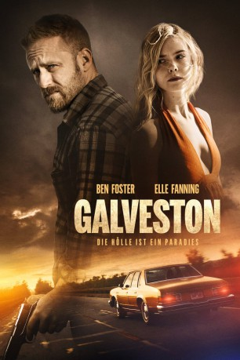

#10847 Galveston - Die Hölle ist ein Paradies
Alternativ: Galveston (Englischer Titel)
 
 IMDB-Wertung: 6.2 / 10
IMDB-Wertung: 6.2 / 10  Metascore: 57
Metascore: 57 
Einzelgänger Roy führt ein Leben außerhalb geregelter Bahnen und hat soeben eine schwerwiegende gesundheitliche Diagnose erhalten. Abhängig von seinem zwielichtigen Auftraggeber Stan muss er dessen Drecksarbeit erledigen - ohne mit der Wimper zu zucken. Als ein scheinbar gewöhnlicher Auftrag aus dem Ruder läuft, steht er mehr als je zuvor mit dem Rücken zur Wand: Mit einer blutjungen Prostituierten und ihrer kleinen Schwester am Hals muss er fliehen. Krimineller Abschaum und Gesetzeshüter sind dem Trio dicht auf den Fersen.
Jahr: 2018
Dauer: 93 Minuten
FSK: 16
Land: USA Studio: RLJE FilmsTonspuren: DTS - ,
Untertitel: Deutsch,
Auflösung: 1080p (1920x808) Größe: 4106 MB
Genre: Action, Thriller, Drama, Krimi
Regisseur: Mélanie Laurent
Drehbuch: Nic Pizzolatto, Nic Pizzolatto
Soundtrack: Marc Chouarain, Eugenie Jacobson
Darsteller:
 Ben Foster als Roy
Ben Foster als Roy Jeffrey Grover als Dr. Finelli
Jeffrey Grover als Dr. Finelli- Christopher Amitrano als Jay
 Mark Hicks als Lou
Mark Hicks als Lou María Valverde als Carmen
María Valverde als Carmen Beau Bridges als Stan
Beau Bridges als Stan- Michael Ray Escamilla als Angelo
- Jimmie Lee Sessoms als First Man
 Elle Fanning als Rocky
Elle Fanning als Rocky- Sean Von Buseck als Davey
- C.K. McFarland als Nancy
- Don A. King als Lance
- Michael John Lane als Gerald
- Robert Aramayo als Tray
 Rhonda Johnson Dents als Nonie
Rhonda Johnson Dents als Nonie- Heidi Lewandowski als Dee
 Adepero Oduye als Loraine
Adepero Oduye als Loraine Philip Fornah als Thung #3
Philip Fornah als Thung #3- Niko Nedyalkov als Thug #4
 Rob Steinberg als Snowbarger
Rob Steinberg als Snowbarger- Tuesday Beebe als Doctor
- Lili Reinhart als Older Tiffany
- Anniston Price als Young Tiffany
- Tinsley Price als Young Tiffany
- Jamal Akakpo als Assistant District Attorney (uncredited)
 Perry Ball als (uncredited)
Perry Ball als (uncredited)- Samantha Bell als Gerald's Daughter (uncredited)
 Jamel Chambers als Murder Witness (uncredited)
Jamel Chambers als Murder Witness (uncredited)- Robert Fortunato als Detective (uncredited)
 Oscar Gale als Butch (uncredited)
Oscar Gale als Butch (uncredited)- Terry Jackson als Drunk Guy (uncredited)
- Jay DeVon Johnson als Neighbor (uncredited)
 John Archer Lundgren als Crab Shack Patron (uncredited)
John Archer Lundgren als Crab Shack Patron (uncredited)- Shay Mack als Diane (uncredited)
- Christian I. Noble als Social Worker (uncredited)
- Mark Smith als Prison Guard (uncredited)
- G. Peter King als Third Man
- Kayte Hughes als Sophia
- Jorge Longoria als Thug #1
- Nounoumanou Malam Annou als Thug #2
- Heidi Christina Baynard als Background Extra (uncredited)
- Glenn D. Bridges als Pedestrian (uncredited)
 Marc Demeter als Sgt. LaMure (uncredited)
Marc Demeter als Sgt. LaMure (uncredited)- Lauran Foster als Vonda (uncredited)
- Brent Moorer Gaskins als Detective (uncredited)
- Thomas Mark Higgins als Inmate (uncredited)
- Gerald Jackson als Stans Side Kick (uncredited)
- Tyrone Neal als Boxer (uncredited)
- Tyrone Testman als Prison Gaurd (uncredited)
Datei: X:\2018(G-M)\Galveston - Die Hölle ist ein Paradies (2018, FSK16, 1920x808).mkv seit 10.03.2019
Festplatte: HD 2018(G-Z)-2019(A-Z)
 Es gibt insgesamt 138 Filme in der Gruppe '2018(G-M)'
Es gibt insgesamt 138 Filme in der Gruppe '2018(G-M)'